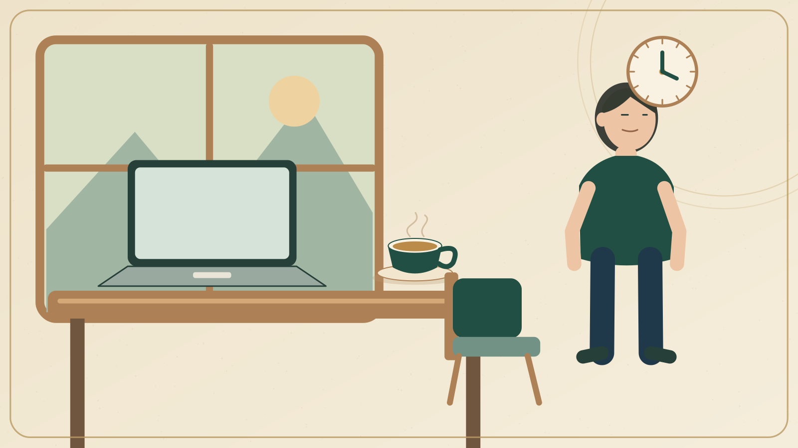

作業の区切り、道具の配置、実行可能な休憩の合図で仕事を妨げない小さな習慣を作ります。
仕事の流れに休憩を組み込む
仕事がすべて終わるまで休息を待つ必要はありません。メールの間、会議の後、水や書類を取りに行く時に離席できます。台湾国民健康署は生活の中で立ち上がり活動する機会を増やすよう勧めています。続けにくい規則を作るより、今の仕事の流れに休憩を合わせましょう。
机の配置は取りやすい物から見直す
よく使う道具を自然に手が届く場所に置き、探すために繰り返しひねる、机を越えて手を伸ばすことを減らしましょう。画面、キーボード、椅子、照明は身長、仕事、設備に応じ調整できます。全員に合う配置はなく、会社に安全衛生や人間工学の支援があれば相談できます。
重要な作業を妨げない合図を選ぶ
カレンダー通知を好む人も、作業の一区切りで自然に休む人もいます。合図を選ぶときは中断の影響、実行しやすさ、忙しい時の柔軟性を考えます。一日に一、二か所の取り組みやすい節目から始め、活動機会を増やせます。休憩を新たな成果課題にする必要はありません。
会議やリモートワークにも切り替えが必要
会議が多い日は会議間に余裕を設け、自宅勤務では作業場所と休息場所を移動できます。離席できない場合は快適な姿勢に変え、後で安全な活動場所を探しましょう。能力と作業安全に合わせ、特定動作を強制しないでください。
実際の経験から予定を調整する
退勤後に同じ姿勢が最も続いた時間帯を振り返り、翌日はそこから調整しましょう。忙しく計画を全部実行できなくても自責せず、続けられる方法を探してください。職場環境で頻繁に不調が出るなら我慢せず、安全衛生担当者に伝えるか専門的評価を受けましょう。
勤務日の具体例
午前は会議後に水を取り、昼は職場が許せば安全な短い道を使って食事や受け取りに行き、午後は書類を終えたら一息つけます。会議が詰まる日は実行しやすい一、二か所に変更しましょう。厳密な時間割や休めなかった分の時間外運動は必要ありません。会議間隔や適切な休息機会をチームで確保する方が個人の時間管理だけに求めるより実際の仕事に合います。どの活動にも柔軟性を残しましょう。
よくある質問：毎回ストレッチをしなければなりませんか？
休息を一連の動作に限定する必要はありません。安全なら水を取りに立つ、短く歩く、道具を置く、作業場所を変えることも生活の一部です。身体に特別な制限があれば自分に合う活動と専門家の助言を優先し、動きの幅を無理に求めないでください。
参考資料
国民健康署｜長時間の座位を中断することと日常活動（閲覧：2026-11-27）
職業安全衛生署｜人間工学的危険予防計画ガイド（職場のリスク把握の背景）（閲覧：2026-11-27）
本文は一般的な生活・文化情報で、個別の医療助言ではありません。本人による確認待ちです。実際のサービス内容、料金、時間、場所はお問い合わせで確認してください。